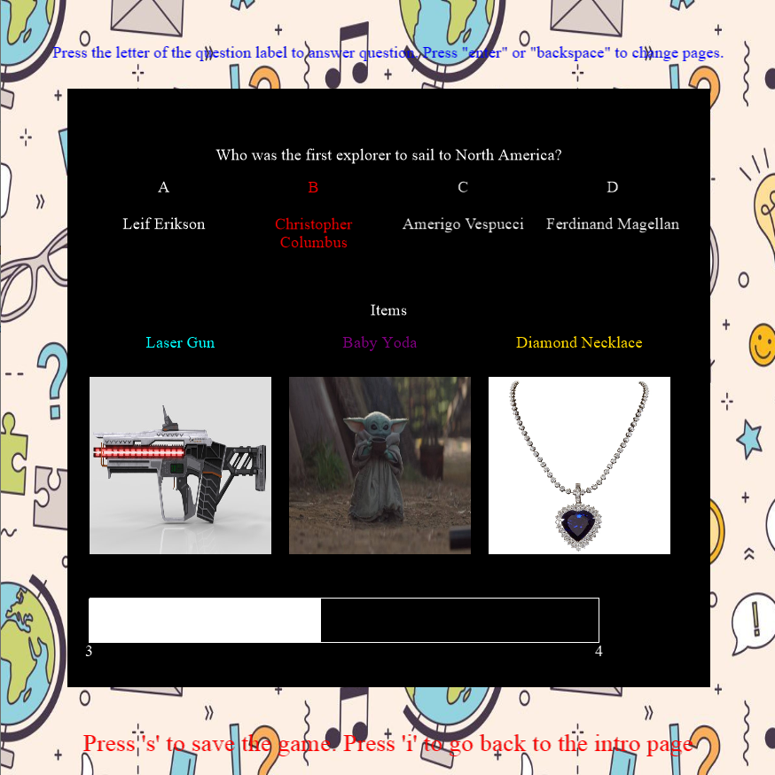

Anshul Bheemreddy
Welcome to my website!
email: anshul.bheemreddy@gmail.com
üèÜEducation
UNIVERSITY OF ILLINOIS AT URBANA-CHAMPAIGN
Bachelor of Science in Computer Science and Statistics August 2020 - December 2023
• GPA: 4.0/4.0
• Relevant Coursework: Data Structures, Computer Architecture, Statistics and Probability 2; Software Design Studio; Discrete Structures; Numerical Methods I; Applied Linear Algebra; Data Science Discovery;
üë©üèΩ‚ÄçüöÄ Projects
Course Organizer Website
• Utilized a NoSQL Document Database in order to allow the users to store courses, course links, and files under their user ID recipes.
• Utilized React to allow the website to respond to and display database changes in real-time
- Demo of the portion of the project that I implemented.
Gamified Quiz App
• Created a C++ app that allowed users to read in quiz questions from a json file or an API and level up and gain abilities through answering those questions Algorithms on Amazon data set
• Implemented Tarjans algorithm on dataset of Amazon items that were commonly purchased together in order to find strongly connected components in dataset.• Found the Betweenness Centrality of the items in the graph in order to find the items that were most central to the network of Amazon purchases.